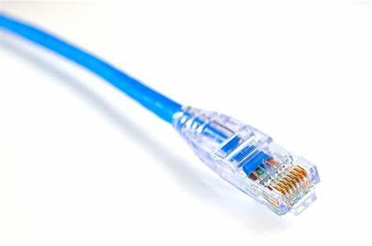
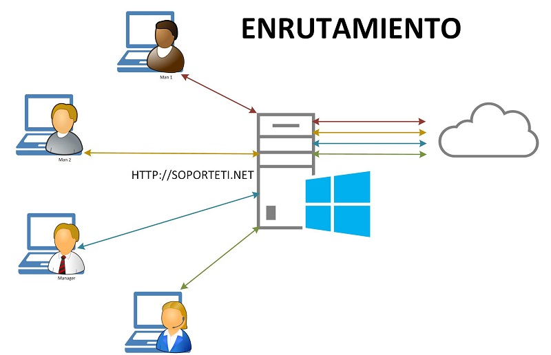
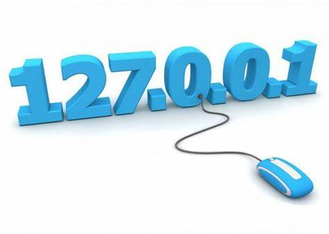
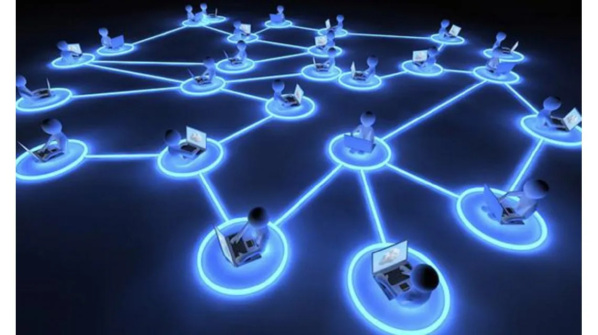

Mi glosario personal de Redes de Comunicación
HECHO POR :JUAN SEBASTIAN DIAZ
Ethernet
- es un estándar de redes de área local para computadoras, por sus siglas en español Acceso Múltiple con Escucha de Portadora y Detección de Colisiones (CSMA/CD). Su nombre procede del concepto físico de éter (ether, en inglés). Ethernet define las características de cableado y señalización; de nivel físico y los formatos de tramas de datos del nivel de enlace de datos del modelo OSI. Ethernet se tomó como base para la redacción del estándar internacional IEEE 802.3, siendo usualmente tomados como sinónimos. Se diferencian en uno de los campos de la trama de datos. Sin embargo, las tramas Ethernet e IEEE 802.3 pueden coexistir en la misma zona.
 Red de redes
- Es la red formada por millones de redes privadas, públicas, académicas, de negocios y de gobierno, de alcance local a global que están enlazadas por una gran gama de tecnologías electrónicas y ópticas de redes.

Redes sociales
- Son las conexiones en línea con las personas en la redes alrededor de un interés común o actividad. Facebook es un ejemplo de una red social popular.

Hashtag
- Símbolo tipográfico que en redes sociales es conocido como Hashtag. Es usado para indicar palabras relevantes dentro de un determinado contexto.
Enrutamiento asimétrico
- Se produce cuando se transfiere un paquete desde un origen a un destino en una ruta, pero toma una ruta diferente al volver al origen.
 Autenticación
- El acto de verificar la identidad suministrada a través de la red por un usuario o una entidad remotos.
Direcciones IP
- Una dirección IP es una dirección única que identifica a un dispositivo en Internet o en una red local. IP significa “protocolo de Internet”, que es el conjunto de reglas que rigen el formato de los datos enviados a través de Internet o la red local 1. Las direcciones IP se pueden expresar como un conjunto de cuatro números separados por puntos, por ejemplo, 192.158.1.38 1. Cada número del conjunto puede variar de 0 a 255. Por lo tanto, el rango completo de direcciones IP va desde 0.0.0.0 hasta 255.255.255.255 1. Las direcciones IP no son aleatorias y son generadas y asignadas matemáticamente por la Autoridad de números asignados de Internet (Internet Assigned Numbers Authority, IANA), una división de Internet Corporation para números y nombres asignados (Internet Corporation for Assigned Names and Numbers, ICANN)
 NODO
- Es un punto de interseccion, conexion o union de varios elementos que confluyen en el mismo lugar
 PSI
- proveedor de servicios de internet
URL
- Una URL, o "Uniform Resource Locator" (Localizador Uniforme de Recursos, en español), es una dirección que se utiliza para identificar de manera única un recurso en internet, como una página web, una imagen, un archivo, un video, o cualquier otro tipo de recurso en la World Wide Web.
BILIOGRAFÍA
- Wikipedia contributors. (s/f). Ethernet. Wikipedia, The Free Encyclopedia. https://es.wikipedia.org/w/index.php?title=Ethernet&oldid=152869048
- Wikipedia contributors. (s/f-b). Internet. Wikipedia, The Free Encyclopedia. https://es.wikipedia.org/w/index.php?title=Internet&oldid=154609794
- Redes Sociales - Qué son, tipos, ejemplos, ventajas y riesgos. (s/f). Recuperado el 26 de octubre de 2023, de https://concepto.de/redes-sociales/
- Qué es una dirección IP: definición y explicación. (2023, agosto 17). latam.kaspersky.com. https://latam.kaspersky.com/resource-center/definitions/what-is-an-ip-address